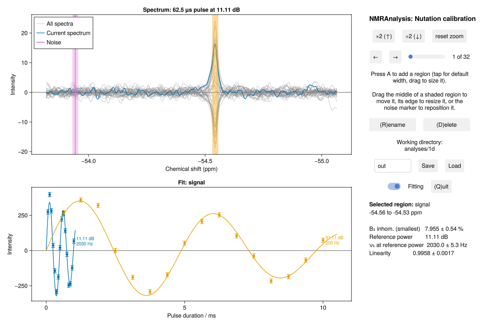
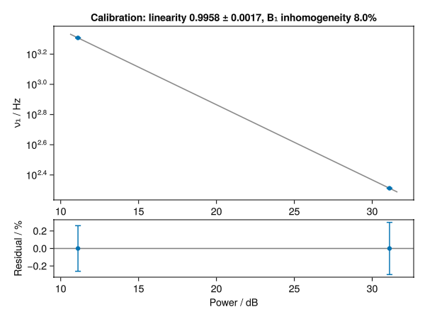

Pulse calibration
calibration1d analyses a nutation experiment, a series of spectra with increasing pulse length, to give the B₁ field strength, the 90° pulse length and the B₁ inhomogeneity. Use it to calibrate spin-lock powers for R1ρ and CEST.
The integral is fitted to a sinusoid with a Gaussian envelope,
\[I(t) = A \sin(2\pi \nu t) \exp\left(-\tfrac{1}{2}(2\pi \sigma \nu t)^2\right), \qquad t_{90} = \frac{1}{4\nu},\]
or a cosine for an experiment that starts from transverse magnetisation. A Gaussian distribution of B₁ with relative width σ produces exactly this envelope, so σ is the B₁ inhomogeneity. Relaxation during the pulse also damps the signal, so σ is an upper bound, and least reliable at low power, where the pulses are longest.
With several experiments at different powers, the fields are fitted to
\[\nu_1(p) = \nu_1^\text{ref} \cdot 10^{-L(\text{dB}(p) - \text{dB}(p_\text{ref}))/20},\]
where a linearity $L$ of 1 is an ideal amplifier, and less than 1 means the field falls short at high power.
Usage
using NMRAnalysis
calibration1d("1") # one power level
calibration1d(["1", "2", "3"]) # several, for the calibration curveThe pulse lengths, the power and the modulation are read from the pulse-sequence annotations, or asked for:
| Keyword | Meaning | Annotation |
|---|---|---|
T | Pulse lengths, s | calibration.duration |
power | Power of each experiment, dB | calibration.power |
phase | :sine or :cosine | calibration.model |
An annotated ¹⁹F nutation sequence is available as 19f_calib_nut.cw. Its nominal flip angle runs to 720°: measuring σ needs several periods of nutation.
Example
A ¹⁹F calibration at two power levels:
calibration1d(example("calibration1d_19f"))
Use the calibration
B1Calibration turns the results into a calibration for the exchange analyses, or to work out powers and fields:
cal = B1Calibration(calibration1d(["1", "2", "3"]))
hz(Power(-15.0, :dB), cal) # the field at a power
Power(2000.0, cal) # the power for a 2 kHz field
exchange1d(["11", "12"]; calibration=cal)exchange1d and setupR1rhopowers also take the calibration experiments directly, and fit them without a window:
exchange1d(["11", "12"]; calibration=["1", "2", "3"])
setupR1rhopowers(["1", "2", "3"])When that analysis is saved, the calibration is saved with it, in calibration/. See the R1ρ tutorial for setting up spin-lock powers.
Output
| Parameter | Meaning |
|---|---|
A | Amplitude |
nu | Nutation frequency, Hz |
sigma | B₁ inhomogeneity at this power, % |
pulse90 | 90° pulse length, µs |
inhomogeneity | The smallest sigma, % |
powerref, nu1ref, linearity | The calibration curve, for several powers |
Save writes these to results.csv, the nutation curves to fit.pdf, and, with several powers, the calibration curve to calibration.pdf. Each power's values carry the power as a suffix, as in nu_11.11. For the example:
| region | nu_11.11 | pulse90_11.11 | sigma_11.11 | A_11.11 | nu_31.11 | pulse90_31.11 | sigma_31.11 | A_31.11 | inhomogeneity | powerref | nu1ref | linearity |
|---|---|---|---|---|---|---|---|---|---|---|---|---|
| signal | 2030.5 ± 5.3 | 123.12 ± 0.32 | 7.95 ± 0.54 | 345.2 ± 8.5 | 205.04 ± 0.61 | 1219.3 ± 3.6 | 10.04 ± 0.48 | 356.9 ± 8.9 | 7.95 ± 0.54 | 11.11 | 2030.5 ± 5.3 | 0.9958 ± 0.0017 |
